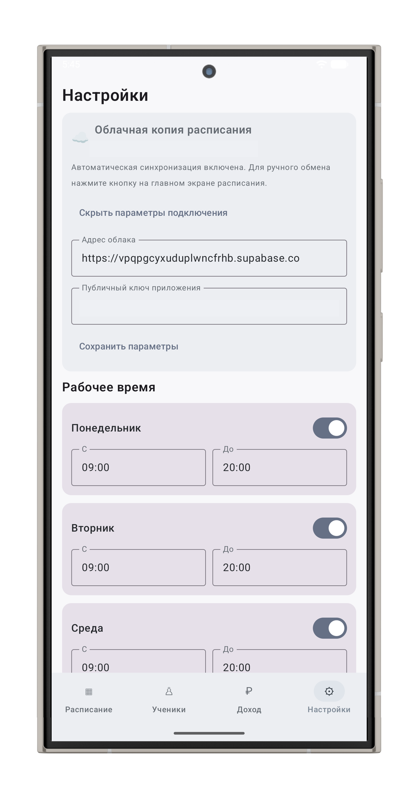

01 · АККАУНТ И ПОДКЛЮЧЕНИЕ
Подключите облачную синхронизацию
Создайте аккаунт по электронной почте и войдите. Для синхронизации в параметрах подключения нужно указать адрес проекта Supabase и публичный ключ приложения. Ключ требуется для работы приложения; значения на скриншоте замазаны.
